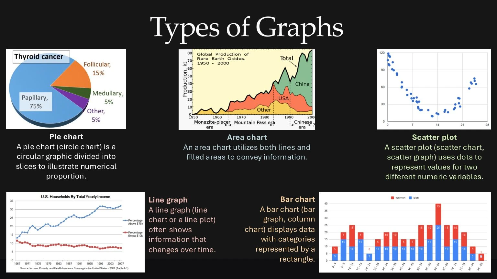
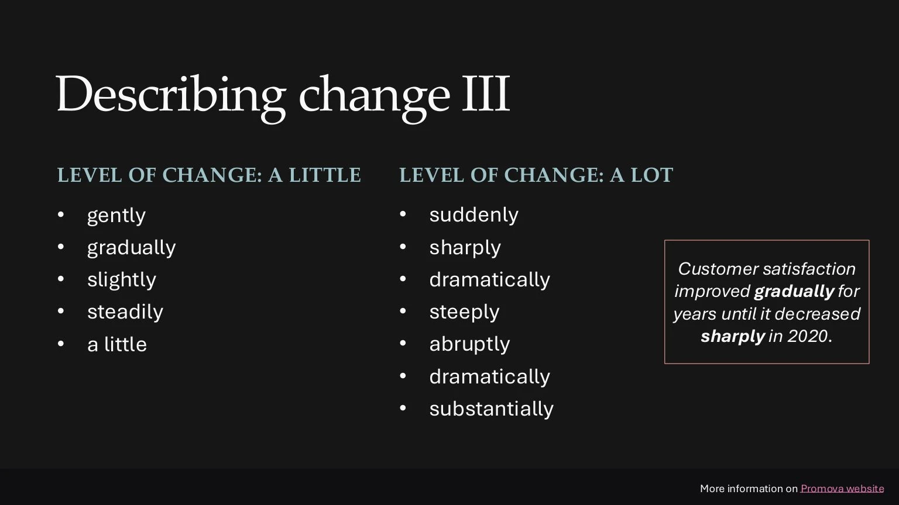

KE00DA03 大学英语 · 第 05 / 10 讲
第 5 讲 · 工程演讲与图表描述
Technical Presentations and Describing Graphs
所属章节：第 2 章 词汇语法与演讲表达
资料来源 · 8 项 / 已附 0 项
3_Assignments_4_ASSIGNMENT 3 Presentation [DL Nov 27]_intro_intro.html未附原文件5_UNIT 2 Expressing Opinions_3_Meeting 9 homework.html未附原文件5_UNIT 2 Expressing Opinions_8_Meeting 12 homework.html未附原文件4_UNIT 1 Building Know-how_5_Meeting 5 homework.html未附原文件4_UNIT 1 Building Know-how_2_Meeting 2 homework.html未附原文件Meeting9_EHUT_3015.pdf未附原文件News_article_2_(Energy&Software)_-_Data_centers_(C1).pdf未附原文件News_article_2_(Energy&Software)_-_Data_centers_(B1).pdf未附原文件
未附文件仅列原始名称；版本与核对日期由维护者登记。
本节定位
第 5 讲对应 Assignment 3：3 至 4 分钟的工程主题演讲，在最后一次网课的 breakout room 里向 3 至 5 人小组交付，并为老师录制。它同时并入了两条支线：Meeting 9 的图表描述（British Council B1 材料 + 小游戏）与 Meeting 12 的朗读测试准备（11 月 18 日，Moodle 10:00–22:00）。
与前几讲的关系：第 4 讲练「60 秒说服」，本讲练「4 分钟讲清一件事」；第 2 讲的分块与停顿、第 3 讲的词序与搭配在这里被同时调用，评分表也第一次把 fluency、vocabulary、pronunciation、grammar 四项并列。
学完本讲你应当能够：
- 判断一个来源是否属于课程认可的可信来源，并说明理由
- 在 3 至 4 分钟里安排 400 至 520 词的内容，分配开场、主体、结尾的时间
- 用 first、second、finally、moving on 等路标语组织演讲
- 用趋势动词、副词与四类句式准确描述一张折线图或柱状图
- 区分 increase by 与 increase to、percent 与 percentage point
- 为一页幻灯片做减法：一个信息点、清晰的层级、标注来源
- 用绕口令与最小对立对练发音，完成朗读测试的考前准备
- 在 breakout room 里交付并录制，用 Zoom 桌面端而不是手机或浏览器
5.1 任务与评分：五项并列
作业要求可以拆成五步：选一个与未来专业相关的工程主题（公司、技术、产品、流程、发明、创新均可）→ 找来源且必须在演讲中提及 → 做 3 至 4 分钟的演讲 → 加视觉材料（PowerPoint 可以，但不必须是；Canva 等自由选择）→ 在最后一次网课（11 月 27 日）的 breakout room 里向 3 至 5 人小组演讲，同时为老师录制。
评分维度有五项，原文列出：overall impression (content, sources, visuals)、fluency、vocabulary、pronunciation、grammar。注意第一项是整体印象，它把内容、来源、视觉三者打包评价——这意味着「资料找得对、幻灯片做得清楚」本身就能拿分。
5.2 选源：什么样的来源算可信
作业对来源的限制非常具体，这是本讲最容易被忽略却最容易丢分的部分：Credible sources include research articles, reports, and government/organization websites. Do not use commercial websites, blogs, news articles, or wikis.
| 来源 | 可用？ | 理由 |
|---|---|---|
| 研究论文（期刊、会议论文） | 可用 | 有同行评审，方法与数据可追溯 |
| 机构或政府报告（能源署、统计局、标准组织） | 可用 | 署名机构、有统计口径与年份 |
| 大学或实验室官网的技术说明 | 可用 | 属 organization website，作者与日期明确 |
| 企业产品页 / 营销页面 | 不可用 | 商业网站，数据为营销目的服务 |
| 个人博客、Medium 专栏 | 不可用 | 无审稿，作者资质不明 |
| 新闻文章（含英文新闻网站） | 不可用 | 二次转述，常缺方法与口径 |
| 维基百科等 wiki | 不可用 | 多人协作、随时改动，不能作为引用来源 |
判断一个来源能不能用，问三个问题：谁写的（署名机构还是匿名）、数据从哪来（原始统计还是转述）、有没有日期与口径（年份、样本、单位）。三问有一问答不上来，就换一个来源。
5.3 3 至 4 分钟装多少内容
按 130 至 150 词／分钟计算，3 分钟约 390 至 450 词，4 分钟约 520 至 600 词。留出幻灯片切换与两次停顿，安全区间是 400 至 520 词。超过 550 词几乎必然超时，因为切换幻灯片时语流会中断。
| 段落 | 3 分钟版 | 4 分钟版 | 内容 |
|---|---|---|---|
| 开场 | 25 秒 | 35 秒 | 钩子 + 主题 + 路线图（今天讲三点） |
| 主体一 | 50 秒 | 65 秒 | 背景与问题：为什么这件事值得讲 |
| 主体二 | 55 秒 | 75 秒 | 技术核心：原理、流程或数据 |
| 主体三 | 40 秒 | 55 秒 | 影响与限制：成本、风险、前景 |
| 结尾 | 20 秒 | 30 秒 | 总结一句 + 行动邀请 + 提问 |
这个分配有一个纪律：主体三点、每点一句主张。三点讲不透，不如两点讲透。作业评分看的是整体印象与流利度，不是信息量。
5.4 路标语：让听众知道你在哪
演讲的流利不等于语速快，而是结构可预测。路标语（signposting）就是给听众的路牌，每一句都在告诉他「现在到哪了、接下来去哪」：
| 功能 | 句型 | 使用时机 |
|---|---|---|
| 开场与路线图 | Today I’ll cover three points: first … , then … , and finally … . | 第一页幻灯片 |
| 开始第一点 | Let’s start with the background. | 进入主体 |
| 切换 | That brings me to my second point. | 换页时，代替「接下来」 |
| 举例 | A good example of this is … . | 需要具体化时 |
| 强调 | What matters here is … . | 核心数据前后 |
| 收束 | So, to sum up, … . | 最后一张幻灯片 |
| 邀请提问 | I’m happy to take any questions. | 结尾 |
这些句子还有一个副作用：它们给你换气的时机。每切换一次就有一个自然停顿，语速会自动稳定下来。
5.5 一页幻灯片只讲一件事
作业只要求 Add some visuals，没有规定版式，但评分维度里的 visuals 决定了你需要遵守几条基本纪律：
- 一页一个信息点：标题就是这一页的结论，不是「结果」这样的空标题
- 文字不超过六行，每行不超过八个词；讲稿放在你嘴里，不放在屏幕上
- 图表大于文字：能用一张图说清的，不要用三行 bullet
- 层级清楚：标题最大，数据次之，来源最小但必须有
- 来源标注格式统一：机构名 + 年份，写在页面底部
来源标注不是形式主义。作业要求 Find sources on the topic (must be mentioned)——「提及」既包括口头说 according to a 2023 report by …，也包括幻灯片上的一行小字。两者都做最稳。
5.6 图表描述：三类词、四类句式
Meeting 9 的作业给了两条训练：一个 learningapps 上的图表词小游戏，以及 British Council B1 的 describing charts 阅读加三个任务。核心是把「趋势」拆成方向、幅度、时间三个变量。
| 方向 | 动词 | 名词形式 |
|---|---|---|
| 上升 | rise, increase, grow, climb, go up | an increase, a rise, growth |
| 下降 | fall, decline, decrease, drop, go down | a fall, a decline, a decrease |
| 平稳 | remain stable, stay steady, level off, plateau | stability, a plateau |
| 波动 | fluctuate, vary | fluctuation |
| 峰值与低谷 | peak, reach a peak, hit a low, bottom out | a peak, a low |
| 幅度副词 | 含义 | 例 |
|---|---|---|
| sharply / dramatically / steeply | 急剧 | Sales rose sharply from 20 to 45 units. |
| significantly | 显著（可用于统计语境） | Energy use increased significantly after 2020. |
| steadily / gradually | 稳定、渐进 | The share grew steadily over five years. |
| slightly / marginally | 轻微 | Costs fell slightly in the second quarter. |
四类句式覆盖绝大多数图表句：
- 动词句：Sales rose from 20 to 45 units between January and March.（from A to B 表区间）
- 名词句：There was a sharp increase in sales in the first quarter.（there was + a + 形容词 + 名词 + in）
- 状态句：The figure stood at 12% at the end of the year.（stood at 表某时点的值）
- 占比句：Wind power accounted for 30% of the total.（account for 表占比）
5.7 图表描述的三段式
一段好的图表描述不是流水账，而是「引入—描述—解读」三步。以作业要求「找一个有意思的图，准备介绍并讨论」为例：
引入：This chart shows the share of renewable electricity in Finland from 2010 to 2023.（说明图讲什么、时间范围、单位）。
描述：It rose steadily from about 25% to just over 40%, with a sharp increase after 2019.（方向 + 幅度 + 转折点）。
解读：What stands out is that most of the growth came after 2019, which suggests that policy changes had an effect.（一句结论 + 一句谨慎的原因，避免把相关当因果）。
5.8 交付：breakout room 与 Zoom 录制
交付方式有两个技术约束，每年都有人在这里丢分：演讲在 breakout room（3 至 5 人）进行，并且必须为老师录制；录制要求用 Zoom 电脑应用程序加入会议，因为 recording does not work on phone/tablet or in browser version。
- 提前用电脑端 Zoom 加入测试会议，确认本地录制可用
- 把幻灯片存成 PDF 备份，避免字体或动画在共享时出错
- 在 breakout room 里先报主题与时长，再开始讲
- 讲完把录制文件上传云端并生成公开链接，课后提交到返交框
5.9 发音与流利度：朗读测试的考前准备
Assignment 2 的朗读测试在 11 月 18 日，Moodle 当天 10:00 至 22:00 开放，范围是课上练过的材料，官方建议用 recap material 加 Padlet 上的句子复习。评分表里的 pronunciation 与 fluency 两项，也在此处被直接检验。
Meeting 5 的作业要求在家练绕口令（tongue twisters），这是最省时的发音热身：
- She sells seashells by the seashore. 练 /ʃ/ 与 /s/ 的切换，注意 seashells 中间不停。
- Peter Piper picked a peck of pickled peppers. 练 /p/ 的送气与连续爆破。
- Red lorry, yellow lorry. 练 /r/ 与 /l/，以及 /e/ 与 /əʊ/ 的区别。
- Three thin thieves thought a thousand thoughts. 练 /θ/ 与 /ð/ 的舌尖位置。
练习方法不是「念快」，而是三档速度：慢速（每词清楚）→ 中速（连成块）→ 常速（只保证每块清楚，块内可含糊）。三档都过，才算练成。录音对比时只听一个音，不要一次听全部。
5.10 AI 规则与作者身份
本作业允许 AI 做四件事：brainstorming、help in the information search (double check AI sources!)、summarizing information、creating visuals；禁止两件事：writing a script for the presentation 与 producing any material (other than visuals)。
注意 double check AI sources 这个括号：AI 给的来源链接经常不存在或与内容不符，而本作业明确要求来源可信。凡是 AI 提供的文献，必须自己打开原文核对作者、年份与数据。
第 4 讲练“60 秒说服”，本讲练“4 分钟讲清一件事”：分块与停顿（第 2 讲）、词序与搭配（第 3 讲）在这里同时被调用，评分表第一次把 fluency、vocabulary、pronunciation、grammar 与 overall impression 并列。路标语给听众路牌也给讲者换气时机：Today I’ll cover three points …／That brings me to my second point／So, to sum up …。每切换一次就有自然停顿，语速自动稳定。主体三点、每点一句主张；三点讲不透不如两点讲透。
选源是本讲最易丢分处：可用研究论文、机构报告、政府或大学官网，不可用商业产品页、博客、新闻、wiki——新闻里的“某研究称”不能当来源，要引那项研究本身。图表四个数字陷阱：increased by 20%（增长幅度）与 increased to 20%（终值）不同；10%→13% 是三个 percentage points 而非 3%；the number of units was 用单数、a number of units were 用复数；amount 配不可数、number 配可数。解读留余地用 which suggests that …，别说 this proves。
5.11 图表词库扩展（Meeting 9 原版词库）
5.11a 五种图（Types of Graphs）
| English | 中文 | 说明 / 例句 |
|---|---|---|
| pie chart (circle chart) | 饼图 | circular graphic divided into slices → numerical proportion |
| line graph (line chart) | 折线图 | shows information that changes over time |
| bar chart (column chart) | 柱状图 | categories represented by rectangles |
| area chart | 面积图 | lines + filled areas |
| scatter plot | 散点图 | dots for two numeric variables |
5.11b 上升（NUMBER IS GOING UP）
| English | 中文 | 说明 / 例句 |
|---|---|---|
| increase (steady) | 稳步上升 | |
| rise | 上升 | |
| grow | 增长 | |
| go up | 上行 | |
| soar (rapid) | 暴涨 | |
| double | 翻倍 | |
| multiply | 成倍增长 | |
| climb | 爬升 | |
| exceed | 超过 |
5.11c 下降（NUMBER IS GOING DOWN）
| English | 中文 | 说明 / 例句 |
|---|---|---|
| decrease | 下降 | |
| drop (rapid) | 骤降 | |
| fall | 下跌 | |
| decline | 衰退 | |
| plummet (rapid) | 断崖式下跌 | |
| halve | 减半 | |
| depreciate | 贬值 | |
| plunge (rapid) | 猛跌 |
5.11d 波动·峰值·平稳（UP AND DOWN / STAYING THE SAME）
| English | 中文 | 说明 / 例句 |
|---|---|---|
| fluctuate / undulate | 波动 | |
| dip | 先降后升的小低谷 | |
| reach a peak / peaked | 到达峰值 | |
| bottom out | 触底 | |
| sink to a trough | 跌入谷底 | |
| level off | 趋平 | |
| remain constant/steady | 保持稳定 |
5.11e 幅度副词（LEVEL OF CHANGE）
| English | 中文 | 说明 / 例句 |
|---|---|---|
| 小幅 | gently · gradually · slightly · steadily · a little | |
| 大幅 | suddenly · sharply · dramatically · steeply · abruptly · substantially |
幻灯片原例句（背下来直接用）：Consumer demand will rise in the following months.；The number of complaints has been increasing since June.（现在完成进行时）；Our market share is expected to decline this year.（is expected to 预测句式）；The number of Windows users has plunged in the past two years.；Sales dipped in July but peaked again in December.；Customer satisfaction improved gradually for years until it decreased sharply in 2020.（gradually + sharply 对比）
5.12 阅读落地：为什么数据中心落户芬兰（B1/C1 双版精读）
文章结构（businessfinland.com, 2025-01-20）：标题 Cool, calm and connected: Why companies are placing their data centers in Finland——四个自然优势 + 一组量化数字 + 政策引语。
| English | 中文 | 说明 / 例句 |
|---|---|---|
| ICT industry is heavy on the environment | ICT 产业环境负担重 | 总起句：servers consume massive amounts of electricity |
| water is needed to cool the equipment | 冷却要耗水 | 与耗电并列的第二个环境成本 |
| the explosion of generative AI | 生成式 AI 的爆发 | 加重大负担的表达 |
| asking ChatGPT-4 to write a 100-word email | 让 GPT 写一封 100 词邮件 | ≈ 14 只 LED 灯亮 1 小时的电量 + 超过半升水 |
| if 1 in 10 Americans asked once a week… | 每十个美国人每周一次 | 电量 ≈ 华盛顿特区全部住户 20 天用电；水 > 4.35 亿升 |
| CO2 targets / accountability | 碳目标 / 问责压力 | 企业选址的两大推力 |
| cool climate | 凉爽气候 | 天然免费冷源 |
| affordable clean energy | 廉价清洁能源 | 芬兰电网低碳 |
| abundant fresh water | 充足淡水 | 冷却资源 |
| robust / excellent digital infrastructure | 扎实的数字基础设施 | connectivity 连通性 |
| 50 construction-ready sites | 50 个可开工建设场址 | 小至小型、大到 1000 MW+ |
| renewable energy · top-notch security | 可再生能源 · 顶级安全 | 投资推介标准三件套 |
B1 版用法：同一事实用短句改写（如 Servers use a lot of electricity. AI makes it worse.），适合先读 B1 抓结构，再回 C1 采集高级表达（stack it all together 把数字加总、staggering 惊人的、prime location 优选地、paywall 付费墙）。
5.13 Meeting 9 幻灯片原图（图表类型与描述变化）
下面 4 页是 Meeting 9 幻灯片里「图表」部分的原版画面，与 5.11 的词库一一对应——描述变化时脑中过一遍这张图，用词就不会跑偏。




| English | 中文 | 说明 / 例句 |
|---|---|---|
| credible source | 可信来源 | Research articles, reports and government websites are acceptable. |
| commercial website | 商业网站 | Product pages cannot be used as sources in this assignment. |
| signposting | 路标语 | Today I’ll cover three points … helps listeners follow you. |
| breakout room | 分组讨论室 | You will present in breakout rooms of three to five people. |
| trend verb | 趋势动词 | rise, fall, level off, peak, fluctuate. |
| percentage point | 百分点 | A change from 10% to 13% is three percentage points. |
| account for | 占（比例） | Wind power accounted for 30% of the total. |
| stand at | 处于（某数值） | The figure stood at 12% at the end of the year. |
| fluency | 流利度 | One of the five criteria in the presentation assessment. |
| overall impression | 整体印象 | Content, sources and visuals are judged together. |
| visual | 视觉材料 | A visual can be a slide, a chart or a short clip. |
| tongue twister | 绕口令 | She sells seashells by the seashore. |
| minimal pair | 最小对立对 | ship / sheep differ in one vowel sound only. |
| recap material | 复习材料 | Use the recap material and the Padlet sentences before the test. |
| local recording | 本地录制 | Zoom recording only works in the desktop application. |
| double check | 复核 | Double check AI sources before you cite them. |
解：第一处 increased with 20% 介词错：幅度用 by，increased by 20%。若要表达区间用 from … to …：Sales increased from 20 to 45 units.
第二处 The number of customers were 主谓不一致：the number of 的中心词是 number，单数，改为 was。若写 A number of customers were（许多顾客）才用复数。
第三处隐含问题：increased by 20% 与 from 20 to 45 同时出现会自相矛盾（从 20 到 45 是增长 125%）。二者只能选一个口径。
通用思路：先定口径（幅度／区间／终值）→ 选对应介词（by／from…to／to）→ 再查 the number of 的主谓一致。
解：引入：This chart shows the share of renewable electricity in Finland between 2010 and 2023.
描述：The share rose steadily from about 25% to just over 40%, with a sharp increase after 2019.（from … to … 表区间，steadily 表幅度，after 2019 标转折点）。
解读：What stands out is that most of the growth came after 2019, which suggests that policy changes played a role.（what stands out 引出结论，which suggests 留余地）。
通用思路：一句说明图是什么 → 一句说方向、幅度、转折 → 一句给谨慎的解读；三句之内不要出现两个以上数字口径。
解：3.5 分钟 × 140 词／分钟 ≈ 490 词，取整 480 词（留切换与停顿余量）。
分段：开场 30 秒 70 词；主体一 55 秒 128 词；主体二 60 秒 140 词；主体三 50 秒 116 词；结尾 25 秒 58 词。合计 3 分 40 秒、512 词，略超，可把主体二压到 130 词。
页数：开场 1 页、主体 3 页（每点一页）、结尾 1 页，共 5 页；每页平均停留 40 秒，正好够讲清楚一个信息点。
通用思路：先定总时长 → 乘 140 得词数 → 按段落比例分配 → 页数等于段落数（一点一页），最后按实际朗读复测一次。
解：① 不可用：商业网站（commercial website），数据服务于营销。② 可用：机构报告（organization report），有署名、年份与统计口径。③ 不可用：wiki，多人协作且随时改动，只能用来找线索，不能作引用来源。④ 可用：研究论文（research article），有同行评审与方法说明。
补充做法：从③找到它引用的①与④，再回到原始来源核对数据——这正是 double check 的实际操作。
通用思路：三问定生死——谁写的、数据从哪来、有没有年份与口径；三问全过才引用。
图：某 App 月活跃用户 2022-2025——2022 缓升，2023 中段暴涨，2024 后回落趋平。
解（三段式 + 词库替换）：① 开头点题：This line graph shows our monthly active users from 2022 to 2025.② 分段描述：From 2022 to mid-2023, the number climbed steadily. Then it soared after the AI feature launch, nearly doubling within a year. Since 2024, however, it has declined slightly and levelled off around 4 million.③ 收尾：Overall, growth was gradual at first but turned dramatic in 2023.——每段动词都标注了「速度」（steady/rapid/unsteady），这正是 5.6 的三类词。
- 把下列句子改成语义准确的图表句：The price increased to 15%. / Production was raised with 200 units. / The amount of factories grew.
- 用「引入—描述—解读」三句描述一张你熟悉的图（可用课程作业里的能耗或产量数据），并标注每句的功能。
- 写一份 3 分钟演讲的开场 30 秒（约 70 词），必须包含钩子、主题与三点路线图。
- 把下面这段路标语补齐：Today I’ll cover three points. ______ , the background. ______ , the technology itself. And ______ , what it means for Finland.
- 判断四个来源能否引用并写一句理由：政府统计年鉴、企业产品手册、大学实验室技术报告、个人技术博客。
- 给 She sells seashells by the seashore 设计三档速度的练习方案，并说明每档要检查什么。
答案与思路
1. The price rose by 15%.（若原意是「涨到 15% 这个水平」则用 rose to 15%，但价格通常用幅度）；Production was raised by 200 units.；The number of factories grew.（factory 可数，用 number 不用 amount）。
2. 参考：引入 This chart shows electricity consumption per capita in Finland from 2015 to 2023.／描述 It stayed almost flat until 2020 and then fell slightly, from about 15 MWh to 14 MWh.／解读 What stands out is how stable consumption has been, which may reflect efficiency gains offsetting new demand.
3. 参考（72 词）：Every winter, Finland burns more energy than it can store. I’m going to talk about one technology that changes that: large-scale heat storage. Today I’ll cover three points — first, why storage matters; then, how the technology works; and finally, what it could mean for Finnish industry. 含钩子、主题、三点路线图。
4. First／Second／finally（或 To begin with／Next／And finally）。注意 first 与 second 后接逗号，finally 前用 and 更自然。
5. 政府统计年鉴：可用（政府网站 + 原始统计）；企业产品手册：不可用（商业网站）；大学实验室技术报告：可用（organization 的技术文档，署名与日期清楚）；个人技术博客：不可用（blog，无审稿）。
6. 慢速：每词清楚，重点查 /s/ 与 /ʃ/ 是否分清（seashells 里两个音相邻）；中速：块内连读，sells seashells 不停；常速：只保证 she / sells / seashells / seashore 四个重读词清楚，块内可含糊。每档录 10 秒对比。
本讲方法清单
演讲准备五步
- 选主题并写一句主张（这次演讲要让人记住哪一件事）
- 找 3 个可信来源，每个来源记下机构、年份、关键数字
- 按五段分配秒数与词数，总词数控制在 400 至 520
- 每段配一页幻灯片，页面只放结论与数据，讲稿留在嘴里
- 按 130 至 150 词／分钟朗读复测，超时按「例子→背景→细节」顺序删
图表句四查
- 口径对不对：幅度用 by，区间用 from … to，终值用 to
- 主谓一致：the number of 单数，a number of 复数
- 单位与百分比：percent 与 percentage point 不混用
- 解读留余地：suggests／may，而不是 proves
发音考前热身
- 四个绕口令各三档速度，每档录 10 秒
- Padlet 上的句子逐句朗读，标出难词并单独练
- 只查一个音（如 /θ/ 或 /ʃ/），不要一次改全部
- 测试当天提前 10 分钟测试麦克风，10:00 至 22:00 窗口内提交
| 源文件 | 位置 / 页码 | 覆盖内容 |
|---|---|---|
| 3_Assignments/4_ASSIGNMENT 3 Presentation [DL Nov 27]/intro/intro.html | 全篇 | 五个 AIM、五步任务、来源限制、视觉要求、breakout room 与 Zoom 录制、0–100 评分与五项维度、AI 规则 |
| 5_UNIT 2/3_Meeting 9 homework.html | 全篇 | 图表描述：learningapps 小游戏、British Council B1 describing charts 阅读与三个任务、找一张有意思的图准备介绍 |
| 5_UNIT 2/8_Meeting 12 homework.html | 全篇 | 朗读测试：11 月 18 日、Moodle 10:00–22:00、范围为课上材料、recap material 与 Padlet 句子 |
| 4_UNIT 1/5_Meeting 5 homework.html | 全篇 | 在家练绕口令 |
| 4_UNIT 1/2_Meeting 2 homework.html | 全篇 | Padlet 词表朗读与难读词清单，构成朗读测试的复习范围 |
| （拓展） | — | 五段时间分配表、路标语七种功能、图表四类句式与四个数字陷阱、三档速度练习法为教学补充 |
| 3_Assignments_3_ASSIGNMENT 2 Pronunciation Test [DL Nov 18]_Submissions_Zishuo Wang_Online text.html | 全篇 | 学生提交的朗读测试视频链接，仅作提交格式示例 |
| （跳过） | — | H5P 演示材料、learningapps 游戏与 British Council 页面本身不在源文本内，仅按作业描述转述其任务 |